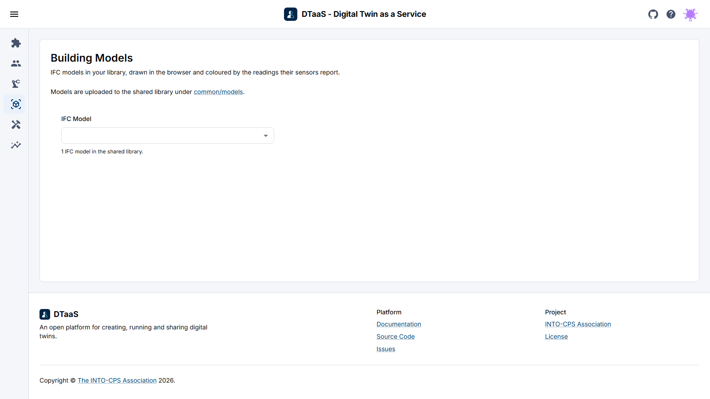

Building Models
The Building Models page draws a building from the user's own library and colours it with the readings its sensors report, so you can see, for example, which of forty rooms is the warm one. A time-series dashboard cannot show that. Open it from Buildings in the menu.

This page describes the asset layout, the binding manifest and the conversion
workflow. It is the user documentation for DTaaS issue 1762. The developer
documentation, covering what the route contains and what it leaves out, is in
client/src/route/bim/README.md.
What the Page Needs
The page reads up to four files per model, all in the user's library under
common/models. The page links to that folder above the viewer.
| File | Required | What it holds |
|---|---|---|
model.ifc |
yes | The building, as the authoring tool exported it |
model.glb |
no | The geometry converted from the IFC file. The page writes it the first time the model is converted |
model.json |
no | The property tree: every object, its IFC class, its storey, its property sets |
model.manifest.json |
no | The binding manifest, mapping each sensor to the object it measures |
An IFC file on its own is enough to see the building. With the geometry file, the next visit loads the model instead of converting it again. The property tree adds the panel that opens when you click an object, and the manifest adds the readings. Nothing fails when the last three files are missing.
How a Model Is Named
The IFC Model menu names each model by what its own file says the building is
called: the project's long name, then its name, then the building's. Only the
first 64 KB of each file is read for this. The menu skips template text that an
authoring tool leaves behind, such as Project Name, and names that two files
share. Those models are shown by their file name, with underscores read as
spaces.
To give a name to a file that has none, use ifc-set-name from the
ifc-utils repository. It
writes the name into the file and changes nothing else. DTaaS stores nothing
about the names.
The Geometry Format
The model is converted to glTF binary, .glb. The issue offered OBJ as an
alternative. OBJ was rejected because it cannot carry a stable identifier per
object, which is the property the issue itself relies on.
The binding key is the IFC GlobalId, a 22-character identifier that the schema
expects to stay the same across exports of the same model. glTF carries
arbitrary data per node in its extras field, so the converter writes the
GlobalId there and the viewer resolves a binding by reading it back. OBJ has
no such field. A marker on an OBJ model can only be placed by node name, and
names are not unique. Two walls are often both called Wall, and the resolver
refuses that case instead of guessing which one the reading belongs to. A model
without a stable identity per object cannot carry a binding that someone can
review.
The Binding Manifest
The manifest is plain JSON beside the model, and it is validated with zod
before anything is drawn. People write it by hand and it will often contain
mistakes, so every error names the binding and the field that caused it, for
example bindings[3].display.ramp, instead of only reporting that the file is
invalid.
Four design decisions shape the format:
selectoris a small union ofglobalId,nodeNameandexpressId, so a non-IFC asset can use the same manifest instead of a second schema. A selector names exactly one of the three. If it named two, the resolver would have to choose between them, and the result would depend on that choice.liveandhistoryare separate. MQTT supplies the current value shown on the model, and the time-series database supplies the panel that opens on a click. The 3D view does not reimplement charting.source_sha256is required. Without it there is no way to tell whether a derived artifact still describes the file beside it. The literalunknownis accepted, for a generator that never read the source, and anything else has to be a SHA-256.display.rampis the range the colour scale spans, and the viewer also reads it as the range the sensor is expected to stay inside. A value outside it raises an alert on the sensor card.
A binding whose object is missing from the geometry is reported and counted.
This happens when an object is deleted and drawn again, or when the exporting
tool does not keep the GlobalId and writes a new one. If the manifest asks for
six markers and only four objects are found, the viewer says which two are
missing instead of silently drawing four.
Conversion
Conversion runs in the browser of whoever opens the model. Putting an IFC file in the library is the whole workflow. You do not need a terminal or a separate service, and there is no step to repeat when the file changes.
Why the Parser Ships Inside the Package
The issue asked that the WebAssembly parser and its workers be served from the
DTaaS origin, so the feature works in a localhost install with no external
network, and it proposed a postinstall copy step to achieve that.
The converter package meets the same requirement differently. The web-ifc
WebAssembly binary is embedded in the JavaScript as base64 at build time, so the
published package contains it and there is no separate .wasm file to serve.
A production build of the client contains no .wasm files and fetches none.
This was chosen over the copy step for three reasons.
First, there is no extra step to forget. A postinstall copy sits outside the
dependency graph. It has to be present in the host's build and survive every
change to that build. When it is missing, the failure shows up at runtime in
somebody else's deployment as a parser that cannot load. An embedded binary
either installs or does not.
Second, it saves a request and a content type. Serving .wasm requires the
right MIME type from the reverse proxy in front of the deployment, and a
Content Security Policy that permits wasm-unsafe-eval. Both are configured in
files this project does not own. A base64 payload inside a JavaScript chunk is
served as JavaScript, which every deployment already handles correctly.
Third, the cost is paid only when needed. Base64 is one third larger than the binary it encodes. That extra size stays out of the main bundle: the parser is in a chunk that is fetched the first time a model has to be converted, and a user who never opens the page never downloads it. The entry chunk of a production build has no reference to the renderer or the parser.
The result is a larger download for the one page that needs it, in exchange for a deployment step that cannot be done wrong. DTaaS is installed on localhost and in air-gapped environments, where the second matters more.
Converting Once Instead of on Every Visit
When a model has no .glb beside it, the page converts it in the browser and
writes the result back into the library, next to the .ifc. The next visit
finds the file and loads it, so only the first person to open the model waits
for the conversion.
The write goes through the workspace's own Jupyter Contents API, the same
interface the Library page reads through. It writes in pieces of 512 KB,
because the server in front of Jupyter refuses a request body of a megabyte.
The write has limits: the destination has to be a single file directly inside
common/models, and an address that already holds a file is left alone, so a
geometry produced outside the browser is never replaced. When the page cannot
tell whether a file is there, it does not write.
The bytes are written to model.glb.part, and the file takes its real name only
when the last piece has landed. A write that fails, or that stops because the
person left the page, deletes its model.glb.part. If the .part file could
not be deleted because the tab was closed, it stays visible in JupyterLab
beside the model. It is safe to delete, and the next conversion of that model
replaces it anyway.
If the server in front of the workspace refuses a piece as too large, the write starts over once in pieces of half the size.
A failed write shows nothing on the page, by design: a model that is not
stored is simply converted again on the next visit. One case is worth knowing
about. On a workspace with Jupyter XSRF protection enabled, the token is in an
HttpOnly cookie that scripts cannot read, so every write is refused. The
failure is written to the browser console.
For a large model it is still better to produce the .glb outside the browser
with ifc-to-glb from the
ifc-utils repository, as
the administrator documentation recommends. The browser conversion covers the
case where nobody has done that.
Recording Where an Artifact Came From
The manifest records the hash of the source it was made from and the name and
version of the converter that made it, and the schema refuses a manifest
without them. This makes it possible to detect a stale manifest. A .glb does
not carry that record yet, whether ifc-to-glb wrote it or the browser did. It
names the tool that generated it and says nothing about the source.
Live Readings
The viewer draws whatever readings it is given and does not subscribe to anything. It knows neither the broker nor the topic scheme, so the same component can serve a demonstration fed by a local publisher and a deployment fed by the platform.
How readings reach the client is not decided yet. There are two options, and they are not equivalent:
- The client subscribes to MQTT over WebSocket against the platform's RabbitMQ,
through the
rabbitmq_web_mqttplugin, and passes the latest value to the viewer. - A platform service, the MQTT Agent described in the DTaaS material, subscribes, validates, stores, and serves the latest value to the client.
The second option separates concerns better, but it depends on that service existing and running, which has not been confirmed. Until this is settled the route shows models without readings. That is already the correct behaviour for a model that declares no sensors, and most architectural models declare none.
What Is Not Built Yet
- History on click: the manifest already carries the
historyblock, with bucket, measurement and tags, so the Grafana address can be built from it. Opening that panel from a marker is not implemented. - Federation: viewing several discipline models together as one building is not supported. Each model is drawn on its own.